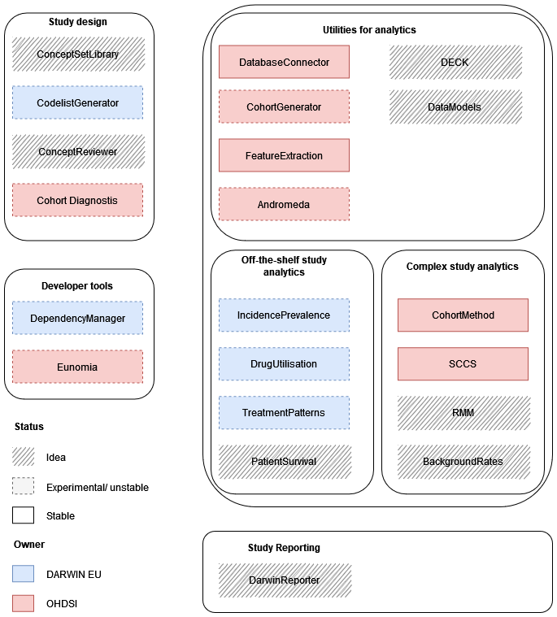

4 Development Roadmap
4.1 Current status
A general summary of packages envisaged for use in DARWIN EU(c) studies is shown below. You can see that there are many open opportunities to take a package from idea to reality, and to take experimental or unstable to a hopefully a more stable footing. (Please note this diagram is intended only to give a general idea of the various packages being used. In particular, there are many more utilities underlying the functioning of code in DARWIN EU(c) studies. To see a full list of dependencies for existing packages please see their description files.)

4.2 Developer tools
These are the main tools we’re using to help us make and maintain R packages. Their purpose is both to make the process itself more straightforward, but also to try and ensure consistency across the code base.
4.2.1 usethis
https://usethis.r-lib.org/
4.2.2 devtools
https://devtools.r-lib.org/
4.2.3 DependencyReviewer
The DependencyReviewer package is specific to DARWIN EU, primarily to ensure that the dependencies being used in packages are …
https://github.com/darwin-eu/DependencyReviewer
Maintainer: Ross Williams
4.2.4 Eunomia
https://github.com/OHDSI/Eunomia
4.3 Study design tools
Most of the study design tools are focused on helping define study phenotypes. These are being developed to follow the workflow of phenotype development being used for DARWIN EU(c). The end goal of the phenotyping process is to generate a cohort definition that will be stored in the DECK and will then be available for use in a study. These tools should though all be general enough to be useful for anyone generating cohort definitions for use with the OMOP common data model.
When designing phenotyping packages (see more details on the process in the next chapter), it is important to keep in mind whether it will be used against patient-level data or only query the vocabulary tables and, if the former, whether they will be run against a database in general (i.e. every time it has a refresh) or in relation to the development of a particular cohort.
4.3.1 ConceptSetLibrary
https://github.com/oxford-pharmacoepi/OmopConceptSetLibrary
https://dpa-pde-oxford.shinyapps.io/OmopConceptSetLibrary/
4.3.2 CodelistGenerator
https://github.com/darwin-eu/CodelistGenerator
Maintainer: Ed Burn
4.3.3 ConceptReviewer
Ask Martí nicely for a demo of his prototype
4.3.4 CohortDiagnostics
https://github.com/OHDSI/CohortDiagnostics
4.3.5 deck
4.4 Core dependencies
4.4.1 DBI
https://dbi.r-dbi.org/
4.4.2 CDMConnector
https://github.com/darwin-eu/CDMConnector
Maintainer: Adam Black
4.4.3 DatabaseConnector
https://github.com/OHDSI/DatabaseConnector
4.4.4 dplyr
https://dplyr.tidyverse.org/
4.4.5 dbplyr
https://dbplyr.tidyverse.org/
4.4.6 SqlRender
https://ohdsi.github.io/SqlRender/
4.4.7 Arrow
https://arrow.apache.org/docs/r/
4.4.8 Andromeda
https://github.com/OHDSI/Andromeda
4.4.9 deckR
4.4.10 CohortGenerator
https://github.com/OHDSI/CohortGenerator
4.4.11 FeatureExtraction
https://github.com/OHDSI/FeatureExtraction
4.5 Off–the-shelf study analytics
4.5.1 IncidencePrevalence
https://github.com/darwin-eu/IncidencePrevalence
Maintainer: Ed Burn
4.5.2 DrugUtilisation
Maintainer: Marti
4.5.3 TreatmentPatterns
https://github.com/darwin-eu/TreatmentPatterns
4.5.4 PatientSurvival
4.6 Complex study analytics
4.6.1 CohortMethod
https://github.com/OHDSI/CohortMethod
4.6.2 SCCS
https://ohdsi.github.io/SelfControlledCaseSeries/